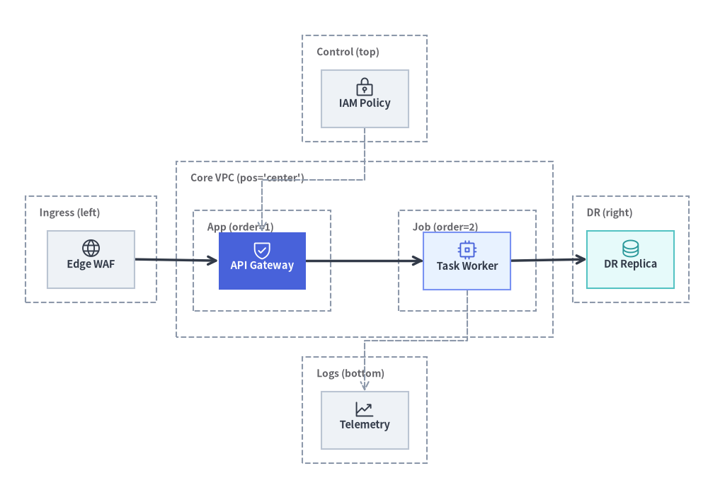
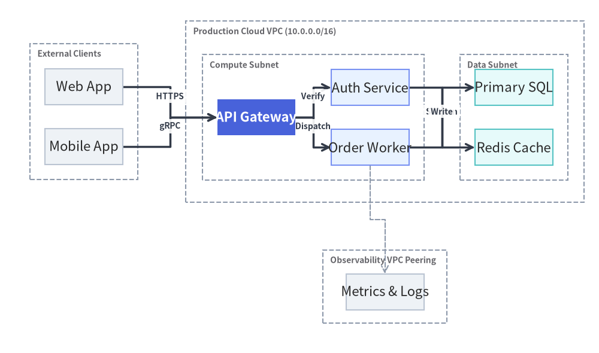
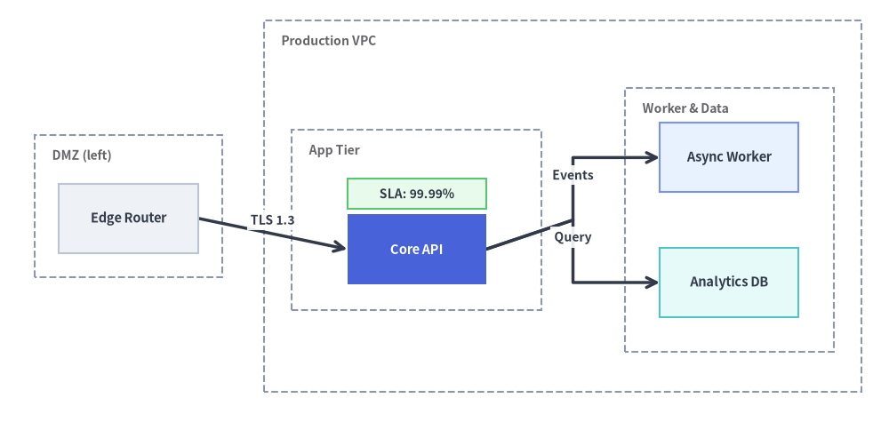

ArchitectureGraph: Cloud Topologies & Nested Containers
ArchitectureGraph is a declarative two-level macro/micro layout solver purpose-built for cloud infrastructure, VPC topologies, and multi-zone microservice architectures.
Unlike generic DAG solvers that flatten nested groups or scramble boundary boxes, ArchitectureGraph solves layouts in two hierarchical phases: packing internal nodes and child clusters inside parent containers (Micro Layout), then arranging top-level containers across a 5-zone compass (pos="left" | "center" | "right" | "top" | "bottom") with orthogonal highway routing (Macro Layout).

Source Code
from drawlib.canvas import save, setup
from drawlib.graph import ArchitectureGraph
from drawlib.icons import phosphor
from drawlib.styles import Styles
setup(width=126, height=86)
g = ArchitectureGraph(
direction="LR",
container_sep=3.5,
default_node_text_style=Styles.DarkBold.patch(text_size=10.5),
default_node_width=15.5,
default_node_height=10.2,
)
# 1. Top Zone (pos="top")
g.cluster("top_zone", ["iam"], label="Control (top)", pos="top", padding=2.6)
g.node("iam", "\nIAM Policy", style=Styles.Neutral)
# 2. Left Zone (pos="left")
g.cluster("left_zone", ["waf"], label="Ingress (left)", pos="left", padding=2.6)
g.node("waf", "\nEdge WAF", style=Styles.Neutral)
# 3. Center Zone (pos="center") with two nested sub-clusters (parent="core", order=1 & 2)
g.group("core", "Core VPC (pos='center')", pos="center", padding=3.0)
g.cluster("tier1", ["api"], label="App (order=1)", parent="core", order=1, padding=3.8)
g.cluster("tier2", ["worker"], label="Job (order=2)", parent="core", order=2, padding=3.8)
g.node("api", "\nAPI Gateway", style=Styles.PrimaryFlat, text_style=Styles.WhiteBold.patch(text_size=10.5))
g.node("worker", "\nTask Worker", style=Styles.PrimaryNeutral)
# 4. Right Zone (pos="right")
g.cluster("right_zone", ["dr_replica"], label="DR (right)", pos="right", padding=2.6)
g.node("dr_replica", "\nDR Replica", style=Styles.SecondaryNeutral)
# 5. Bottom Zone (pos="bottom")
g.cluster("bottom_zone", ["obs"], label="Logs (bottom)", pos="bottom", padding=2.6)
g.node("obs", "\nTelemetry", style=Styles.Neutral)
# Connect across all 5 compass zones
g.edge("waf", "api")
g.edge("api", "worker")
g.edge("worker", "dr_replica")
g.edge("iam", "api", style=Styles.MutedDashed)
g.edge("worker", "obs", style=Styles.MutedDashed)
ox, oy = -5.5, -6.5
layout = g.draw(xy=(ox, oy), width=126.0, height=86.0)
for nid, icon_fn, st in [
("iam", phosphor.lock_key, Styles.Dark),
("waf", phosphor.globe, Styles.Dark),
("api", phosphor.shield_check, Styles.White),
("worker", phosphor.cpu, Styles.Primary),
("dr_replica", phosphor.database, Styles.Secondary),
("obs", phosphor.chart_line_up, Styles.Dark),
]:
n = layout.nodes[nid]
icon_fn((n.x + ox, n.y + oy + 1.9), width=3.8, style=st)
save()
1. Constructor & Container Methods
from drawlib.graph import ArchitectureGraph
from drawlib.styles import Styles
g = ArchitectureGraph(
direction="LR", # "LR" (Left-to-Right) or "TB" (Top-to-Bottom)
container_sep=None, # Gap between top-level containers (auto-scales if None)
edge_routing="orthogonal", # "orthogonal" or "straight"
default_node_style=Styles.Neutral,
default_node_text_style=None,
default_edge_style=Styles.DarkBold,
default_container_style=Styles.MutedDashed,
default_node_width=24.0,
default_node_height=12.0,
)
Parameter Reference
| Parameter | Type | Default | Description |
|---|---|---|---|
direction |
Literal["LR", "TB"] |
"LR" |
Primary macro flow axis ("LR" left-to-right or "TB" top-to-bottom). |
container_sep |
float | None |
None |
Fixed separation between top-level containers (auto-scales to fit canvas if None). |
edge_routing |
Literal["orthogonal", "straight"] |
"orthogonal" |
Edge path routing strategy ("orthogonal" right-angled highway routing or "straight"). |
default_node_style |
Style | None |
None |
Default style applied to nodes without an explicit style (defaults to Styles.PrimaryFlat). |
default_node_text_style |
Style | None |
None |
Default typography style for node labels. |
default_edge_style |
Style | None |
None |
Default line style for edges (defaults to Styles.DarkBold). |
default_edge_text_style |
Style | None |
None |
Default text style for edge labels. |
default_container_style |
Style | None |
None |
Default boundary box style for clusters and groups (defaults to Styles.MutedDashed). |
default_node_width |
float |
24.0 |
Default node width in canvas units. |
default_node_height |
float |
12.0 |
Default node height in canvas units. |
Nested Clusters & 5-Zone Compass Placement
You can organize nodes into single-level or nested two-level containers using g.group() and g.cluster(), or by passing group="..." and subgroup="..." directly on g.node():
g.group(id, label=None, *, nodes=None, style=None, text_style=None, padding=4.0, parent=None, order=None, pos=None, show=True) -> Cluster: Creates a top-level or parent container (such as a Cloud VPC) that can hold child clusters (parent=id).g.cluster(id, nodes, label=None, *, style=None, text_style=None, padding=4.0, parent=None, order=None, pos=None, show=True) -> Cluster: Encloses a list ofnodesinside a labeled boundary rectangle.parent: ID of the enclosing parent group (e.g.parent="vpc").order: Integer rank (1,2, ...) controlling the sequence of sibling tiers inside a parent container.pos: Compass zone ("left","center","right","top","bottom") for macro placement on the canvas.
- Inline Node Membership (
g.node(..., group="...", subgroup="...")): Duringcalc(),ArchitectureGraphinspects each node'sgroupandsubgroupattributes. Any referenced cluster ID that has not been explicitly created viag.group()org.cluster()is automatically registered (using its ID as the label anddefault_container_style), the node is appended to the innermost container, and if bothgroupandsubgroupare provided,subgroup.parentis automatically linked togroup(subgroup.parent = node.group). You can still callg.group()org.cluster()before or afterg.node()to customize labels,pos,order, orpadding.
2. Multi-VPC / Multi-Tier Cloud Topology with Nested Clusters
The following example builds a complete cloud architecture featuring an external client zone (pos="left"), a central production VPC (pos="center") with nested Compute and Data tiers (parent="prod_vpc", order=1, 2), and an observability zone (pos="bottom"):
from drawlib.canvas import save, setup
from drawlib.graph import ArchitectureGraph
from drawlib.styles import Styles
setup(width=124, height=90)
g = ArchitectureGraph(
direction="LR",
container_sep=6.0,
default_node_width=19.5,
default_node_height=10.0,
default_node_text_style=Styles.DarkBold.patch(text_size=10.5),
)
# 1. External client zone pinned to the left (vertically stacked)
g.cluster("ext_zone", ["web_client", "mobile_client"], label="Clients", pos="left", padding=3.5)
g.node("web_client", "Web App", style=Styles.Neutral)
g.node("mobile_client", "Mobile App", style=Styles.Neutral)
# 2. Central Production VPC with nested Compute and Data tiers
g.group("prod_vpc", "Production VPC (10.0.0.0/16)", pos="center", padding=4.0)
g.cluster(
"compute_subnet",
["api_gw", "order_svc"],
label="Compute Subnet",
parent="prod_vpc",
order=1,
padding=5.0,
)
g.cluster(
"data_subnet",
["orders_db", "redis_cache"],
label="Data Subnet",
parent="prod_vpc",
order=2,
padding=5.0,
)
# 50%+ Neutral baseline; single PrimaryFlat hero node for the API Gateway
g.node("api_gw", "API Gateway", style=Styles.PrimaryFlat, text_style=Styles.WhiteBold.patch(text_size=10.5))
g.node("order_svc", "Order Worker", style=Styles.PrimaryNeutral)
g.node("orders_db", "Primary SQL", style=Styles.SecondaryNeutral)
g.node("redis_cache", "Redis Cache", style=Styles.SecondaryNeutral)
# 3. Shared observability platform pinned to the bottom
g.cluster("obs_zone", ["prometheus"], label="Observability", pos="bottom", padding=3.5)
g.node("prometheus", "Metrics & Logs", style=Styles.Neutral)
# 4. Orthogonal highway edges
g.edge("web_client", "api_gw", "HTTPS")
g.edge("mobile_client", "order_svc", "gRPC")
g.edge("api_gw", "redis_cache")
g.edge("order_svc", "orders_db")
g.edge("order_svc", "prometheus", style=Styles.MutedDashed)
g.draw(xy=(-3.0, -4.0), width=124.0, height=90.0)
save()

3. Post-Layout Fine-Tuning with calc() and offset()
When an automatically calculated topology needs a subtle visual adjustment—or when you want to attach custom drawlib.shapes badges at exact node coordinates—call layout = g.calc(), apply layout.offset(node_id, dx=..., dy=...), and then render via layout.draw():
from drawlib.canvas import save, setup
from drawlib.graph import ArchitectureGraph
from drawlib.shapes import rectangle
from drawlib.styles import Styles
setup(width=128, height=62)
g = ArchitectureGraph(
direction="LR",
container_sep=6.0,
default_node_width=20.0,
default_node_height=10.0,
default_node_text_style=Styles.DarkBold.patch(text_size=10.5),
)
# Declare containers with subgroup padding and inline node membership
g.cluster("dmz", ["edge_lb"], label="DMZ (left)", pos="left", padding=3.5)
g.group("vpc", "Production VPC", pos="center", padding=4.0)
g.cluster("app", ["core_api"], label="App Tier", parent="vpc", order=1, padding=8.0)
g.cluster("storage", ["worker", "AnalyticsDB"], label="Worker & Data", parent="vpc", order=2, padding=5.0)
g.node("edge_lb", "Edge Router", group="dmz", style=Styles.Neutral)
g.node(
"core_api",
"Core API",
group="vpc",
subgroup="app",
style=Styles.PrimaryFlat,
text_style=Styles.WhiteBold.patch(text_size=10.5),
)
g.node("worker", "Async Worker", group="vpc", subgroup="storage", style=Styles.PrimaryNeutral)
g.node("AnalyticsDB", "Analytics DB", group="vpc", subgroup="storage", style=Styles.SecondaryNeutral)
g.edge("edge_lb", "core_api", "TLS 1.3")
g.edge("core_api", "worker", "Events")
g.edge("core_api", "AnalyticsDB", "Query")
# 1. Compute layout geometry without drawing
ox, oy = -5.0, -4.5
layout = g.calc(width=128.0, height=62.0)
# 2. Nudge the Core API node slightly downward so a badge fits cleanly inside the App Tier
layout.offset("core_api", dx=0.0, dy=-4.2)
layout.draw(xy=(ox, oy))
# 3. Overlay a SLA status badge right above the Core API node using computed coordinates
api_box = layout.nodes["core_api"]
rectangle(
(api_box.x + ox, api_box.top + oy + 3.0),
width=20.0,
height=4.4,
style=Styles.SuccessNeutral,
text="SLA: 99.99%",
text_style=Styles.DarkBold.patch(text_size=10.0),
)
save()

4. Best Practices
- Use
posfor Peripheral Zones: Keep the main request pipeline inpos="center"(orpos="left"->pos="center"->pos="right") and place cross-cutting concerns like CI/CD, IAM, or Observability inpos="bottom"orpos="top". - Ground Containers in Subtle Dashed Borders: Leave container styles at their default
Styles.MutedDashed(or a very light tint) so foreground service cards maintain crisp contrast. - When You Need Cloud Icons: If your diagram requires official
GcpIconorPhosphorIconinside every node card, useArchitectureDiagramin Chapter 5, or useg.calc()to compute node positions and place icons atlayout.nodes[id].xy.